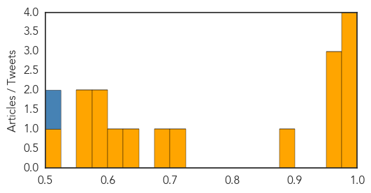
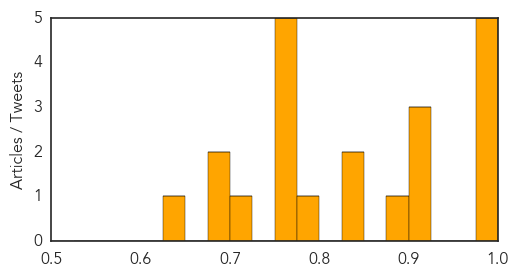

Dengue Fever
30-Day Web Trend
0 alerts, 0 warnings

30-Day Twitter Trend
10 alerts, 0 warnings

Article Locations

Article Confidences
Top Articles:
- 0.994
- 101 cases of dengue fever confirmed on Hawaii Island
- 0.987
- Health department: Now 27 cases of dengue fever on the Big Island
- 0.983
- Dengue Fever Information Update – Public Meetings Begin Tonight
- 0.980
- ‘Fight the Bite’
- 0.961
- ‘Fight the Bite’: State starts dengue fever outreach as cases hit 27
- 0.960
- Dengue fever outbreak on Hawaii Island widens
- 0.956
- State launches ‘Fight the Bite’ campaign to stop dengue fever in Hawaii
- 0.886
- State begins new anti-bite campaign
- 0.703
- Doctors warn of dengue risk to pregnant women - Viet Nam
- 0.683
- Holiday Epidemics: The El Niño Warning
- 0.637
- Health department confirms dengue fever case in East Oahu
- 0.624
- Children’s lives at stake as El Niño strengthens
- 0.579
- Children’s lives at stake as El Niño strengthens: UNICEF
- 0.575
- Children’s lives at stake as El Niño strengthens: Unicef
- 0.566
- Children's lives at stake as El Niño strengthens: UNICEF
- 0.561
- El Nino threatens 11 million children in Africa with hunger, disease-U.N.
- 0.501
- Millions of children’s lives at stake as El Niño strengthens, UNICEF ‘wake-up call’ report warns
Top Tweets:
- 0.740
- Flavivirus news: Dengue down in Davao, No outbreak in Dau - Outbreak News Today: Outbreak News ... https://t.co/IHnjJRQmp7 pathogenposse
- 0.644
- Flavivirus news: Dengue fever outbreak slows in Tainan, remains high in Kaohsiung - Focus Taiwa... https://t.co/eGsvLdWcfK pathogenposse
- 0.585
- Flavivirus news: Dengue: Asymptomatic people transmit the virus to mosquitoes Institut Pasteur ... https://t.co/ZFkTRNVFUU pathogenposse
- 0.561
- Flavivirus news: 2 dengue deaths reported from city - Chandigarh Tribune: 2 dengue deaths repor... https://t.co/YygCgYjZBf pathogenposse
Influenza
30-Day Web Trend
0 alerts, 0 warnings

30-Day Twitter Trend
6 alerts, 0 warnings

Article Locations

Article Confidences
Top Articles:
- 0.999
- 15th MERS fatality in South Korea as number of patients reaches 145
- 0.996
- Get your annual flu shot and increase your odds of wellness
- 0.995
- College students not getting flu vaccine
- 0.987
- The Killeen Daily Herald: Family Living
- 0.980
- CDC Recommends To Get Yearly Influenza Vaccination
- 0.910
- The quest for one-shot flu vaccination for life
- 0.910
- New Model Tracks Virus More Accurately Than Google Flu Trends
- 0.909
- Articles, event listings and opinion
- 0.894
- Articles, event listings and opinion
- 0.848
- Today's stories from newspapers in Caledon
- 0.828
- Three girls of a family diagnosed with H1N1 flu
- 0.787
- Today's stories from newspapers in Orangeville
- 0.771
- Researchers developing new flu vaccine
- 0.751
- November 10, 2015 Archives
- 0.751
- November 10, 2015 Archives
- 0.751
- November 9, 2015 Archives
- 0.751
- November 9, 2015 Archives
- 0.712
- WV officials lift bans on poultry exhibits; warnings continue
- 0.692
- Baby vaccinations remain a cause for concern
- 0.691
- Flu shot mandate unfair for these N.J. workers
- 0.629
- Moms fearing kid flu shot sue city over mandate
Top Tweets:
-
No tweets found for Nov 10, 2015